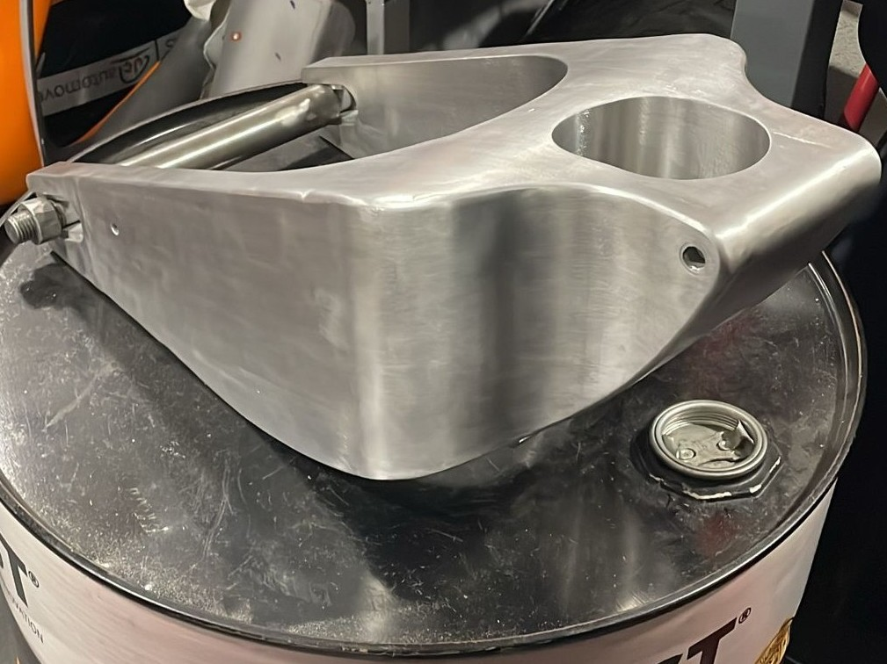

Hollow Swingarm
Motochanics UA had never built a hollow swingarm before, every prior design used solid or lightly-ribbed sections that left mass on the table with no real performance upside. I set out to change that, taking cues from MotoGP swingarm architecture and adapting it to our chassis and suspension geometry. The hard part wasn't the concept, it was hitting both lateral and torsional stiffness targets at once inside a hollow shell: tuning wall thickness and internal ribbing for one almost always fought the other. After several HyperMesh iterations comparing stiffness against mass, I landed on a geometry that satisfied both, the first time the team had managed it.
The manufacturing side taught me as much as the analysis did. I had to produce technical drawings precise enough for outside machining and welding suppliers to work from, then be hands-on for final assembly once the parts came back. A hollow swingarm is only as good as the welds holding it together, and I learned to design with the welder's access and tooling in mind, not just the stress plot.
